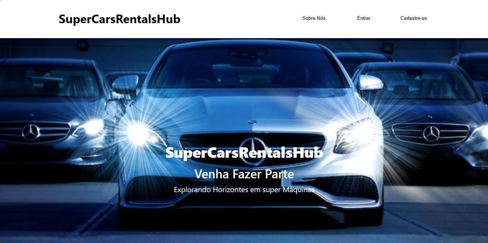
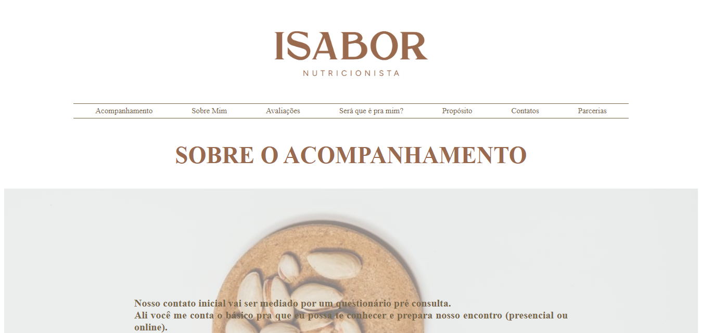

Além do código, quem sou eu?
Que tal se conectar comigo nas redes sociais abaixo e saber mais sobre meu trabalho?


Desenvolvedor FulltStack apaixonado por tecnologia. Busco Soluções criativas para os seus projetos afim de torná-los realidade.
Olá, eu sou Gabriel Ferraz, estou finalizando o curso de Análise e Desenvolvimento de sistemas e Gestão Financeira, até os meus 24 anos eu me mantive na área de mercado financeiro e engenharia civil, porém, sempre fui apaixoxado por tecnologia, quando me deparei com a necessidade de desenvolver meus algoritmos para realizar minha operações de trading no mercado financeiro, vi uma oportunidade de apender e explorar uma nova área e aqui estou eu.
Participei de vários projetos pessoais com amigos e empresas, onde eu pude obter bastante experiência e continuar me aprimorando como desenvolvedor. Hoje continuo completamente apaixonado por tecnologia, como front-end, sou apaixonado em construir telas responsivas e perfeitas, como backend, gosto de pensar da melhor maneira para que a execução seja precisa e assertiva, segura e robusta, porém "simples".
Trabalhei na Adekz, desenvolvendo soluções de software para uma diversificada base de clientes, abrangendo setores como lanchonetes, hotéis, restaurantes e mecânicas. Durante esse período, ganhei experiência em tecnologias como Vue.js, PHP, JavaScript, React e Next.js, com ênfase em integração de gateways de pagamento para soluções seguras de comércio eletrônico. Atualmente, estou focado no desenvolvimento de uma plataforma abrangente de torneios para jogos populares como Fortnite, CS:GO e Valorant. Utilizo uma variedade de tecnologias, incluindo Python, Django, React, Next.js, HTML, CSS e JavaScript. Mantenho padrões rigorosos de codificação, seguindo o PEP 8 do Python e práticas de "Clean Code". Além disso, conduzo testes unitários e utilizo ferramentas como GitHub e AWS para gerenciamento e implantação. Como freelancer, especializei-me na criação de landing pages envolventes e responsivas, utilizando HTML, CSS e Bootstrap. Além disso, realizei o desenvolvimento de CRUD para empresas locais, proporcionando soluções de alta qualidade que combinam design e funcionalidade para alcançar os objetivos dos projetos.
Possuo alguns projetos desenvolvidos que buscam ampliar minhas habilidades com as tecnologias e boas práticas e criar soluções robustas e escaláveis para atender as necessidades dos clientes.
Ferramentas
Descubra as habilidades e ferramentas que domino e que me permitem criar soluções criativas e funcionais para meus clientes.
-

Desenvolvimento Web
HTML5 | CSS3 | JavaScript | React | NODE | Git & Github | SQL & MYSQL | REFLEX | PYTHON
-

Web Design
Habilidade em criar layouts modernos e responsivos, com foco na experiência do usuário.
-

UX/UI Design
Conhecimentos em design de interface e experiência do usuário visualmente atraentes e intuitivas.
-

Gerenciamento de Versões
Experiência em ferramentas de gerenciamento de versão para controle de projetos.
Projetos em Destaque
De ideias abstratas a projetos bem-sucedidos, aqui estão alguns dos meus trabalhos mais recentes
-
Clique para visitar
Super Cars Rental Hub
Plataforma de venda, compra e locação de carros de luxo, usando muitos recursos de formulários e flexbox para estilização e preenchimento. Apresenta design responsivo nos elementos da página, se logar tem acesso ao interno da plataforma que está em desenvolvimento, tendo acesso ao dashboard. Para logar, utilize: Login- Gabriel, Senha-xtreed.
Leia Mais → -
Clique para visitar
isabor Nutricionista
Um site estático para apresentação da nutricionista isabor, onde no futuro irá se tornar um possível site para venda de produtos, anúncio de parcerias, divulgação do consultório, agendamento de consulta e pagamento.
Leia Mais →